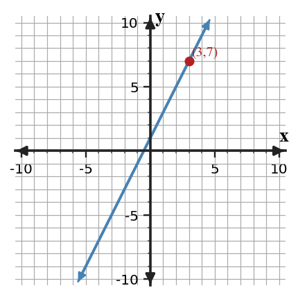
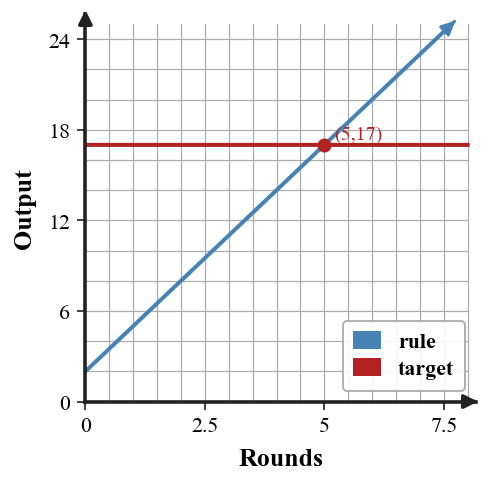
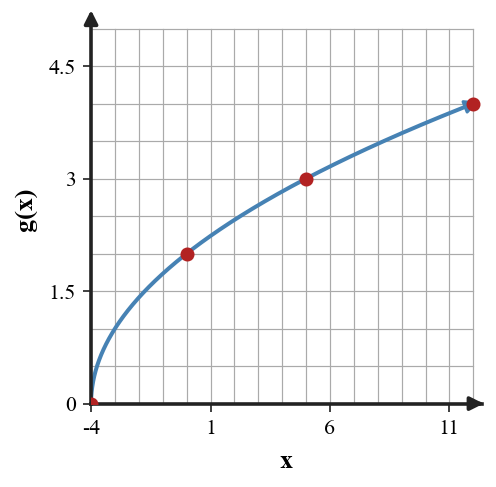

Mathematical idea: A function rule answers the question, "What output belongs with this input?"
Today you will evaluate function notation, complete input-output tables, and decide whether a rule gives one output for each input. You will also revise models when the rule does not match the situation.
Learning Target: Students will interpret functions as rules that connect inputs and outputs without relying on formal domain and range language.
I can statements
This is a long-range preview for future lessons. Do not solve it today. Instead, annotate it individually. Circle anything familiar, underline symbols or directions that seem important, and write notes about what information you think will be needed later.
As you annotate, ask yourself: What parts (words, symbols, graphs) do you KNOW? What parts look FAMILIAR? What parts look like jibberish?
A table for an input-output rule is flawed: $(0,3),(1,6),(2,9),(2,12),(3,12)$. Revise the relation in two different ways: one revision that makes it a function with a constant increase, and one revision that makes it a function but not a constant-increase rule. Explain both choices.
Teacher note: Do not solve the future task. Listen for students naming familiar representations, symbols, and unknown parts.
Directions
Read the introduction aloud with a partner or in a small group. As you read, annotate the text by highlighting important ideas, circling key vocabulary, and writing short notes about connections, questions, or predictions in the margins.
Function notation is a compact way to ask for an output. When you see $f(3)$, the input is 3 and the task is to find the output produced by the rule named $f$. The answer is a value, not a multiplication problem between $f$ and 3.
A relation can be represented by a table, graph, equation, mapping diagram, or context. To act like a function, each input must have only one output. Different inputs may share the same output, but one input cannot split into two different outputs.
Imagine entering the same student ID into a system and getting two different names. That would make the rule unreliable because one input would not lead to a single result. A table with a repeated input must be checked carefully before deciding it represents a function.
Input-output rules help you generate ordered pairs and missing table values. Substitution is one way to use a rule: replace the input variable, then simplify the expression to find the output.
In contexts, inputs and outputs need units and meaning. If $n$ is the number of tickets and $C$ is cost, the rule should match the words on the flyer and the values in the table.
Teacher note: Use this space for student annotations. Prompt partners to underline vocabulary and circle quantities.
Stop and Discuss
Answers: 1. $f(3)$ asks for the output when the input is 3. 2. Each input must have only one output. 3. The same input leading to two outputs makes the rule unreliable and not a function.
To evaluate $f(3)$, find the output when the input is 3.
$$f(3)=2(3)+1=7$$| Input | 0 | 1 | 2 | 3 |
|---|---|---|---|---|
| Output | 1 | 3 | 5 | 7 |

Context: If $x$ is the number of practice rounds, $f(3)=7$ means the output is 7 points after 3 rounds.
The function $f(x)=4x-1$ gives the number of points after $x$ completed challenges.
Example 1 answer: $f(4)=4(4)-1=15$; ordered pair $(4,15)$; after 4 challenges, there are 15 points.
The function $h(x)=3x+5$ gives the total badges earned after $x$ weeks.
You Try It 1 answer: $h(6)=23$; ordered pair $(6,23)$; after 6 weeks, 23 badges have been earned.
Stop and Discuss
Discussion guide: Listen for students connecting the Example and YTI with evidence. Follow-up: ask which representation or step made the answer most certain.
Sometimes the output is known and the input is unknown, so set the rule equal to the target output and solve.
For $A=2+3r$, the question "when is the output 17?" becomes $$2+3r=17.$$
| Rounds $r$ | 0 | 3 | 5 | 6 |
|---|---|---|---|---|
| Output $A$ | 2 | 11 | 17 | 20 |

Context: The point $(5,17)$ means 5 rounds produce the target output of 17.
For $p(x)=\frac{10}{x+1}$, use the rule to evaluate outputs and solve for a target output.
Example 2 answer: $p(1)=5$; $p(4)=2$; $x=4$ makes the output 2.
For $q(x)=\frac{12}{x+2}$, use the rule to answer each question.
You Try It 2 answer: $q(1)=4$; $q(4)=2$; $12/(x+2)=3$ gives $x=2$.
Stop and Discuss
Discussion guide: Listen for students connecting the Example and YTI with evidence. Follow-up: ask which representation or step made the answer most certain.
To complete a table from a rule, substitute each input separately and keep each ordered pair together.
For $g(x)=\sqrt{x+4}$, the input $x=5$ gives $$g(5)=\sqrt{5+4}=\sqrt{9}=3.$$
| $x$ | -4 | 0 | 5 | 12 |
|---|---|---|---|---|
| $g(x)$ | 0 | 2 | 3 | 4 |

Context: Each input has one output, so each completed column becomes one ordered pair.
Complete the table for $g(x)=\sqrt{x+9}$.
| $x$ | -9 | -5 | 7 | 16 |
|---|---|---|---|---|
| $g(x)$ |
Example 3 answer: Outputs: 0, 2, 4, 5. Ordered pair $(7,4)$. The rule gives one square-root value for each listed input.
Complete the table for $r(x)=\sqrt{x+1}$.
| $x$ | -1 | 3 | 8 | 15 |
|---|---|---|---|---|
| $r(x)$ |
You Try It 3 answer: Outputs: 0, 2, 3, 4. Ordered pair $(8,3)$. No input is paired with two different outputs.
Stop and Discuss
Discussion guide: Listen for students connecting the Example and YTI with evidence. Follow-up: ask which representation or step made the answer most certain.
A school club says total cost is $C=18m$, where $m$ is the number of members. The sign-up sheet also says there is a one-time 12 dollar materials fee.
Student claim: "The rule $C=18m$ models the total cost."
Example 4 answer: The rule includes 18 dollars per member but misses the one-time 12 dollars. It is not reasonable; revise to $C=12+18m$.
A fundraiser rule is written as $T=30n$, where $n$ is the number of teams. The flyer also lists a one-time 20 dollar room fee.
Student claim: "The rule already includes all costs."
You Try It 4 answer: $30n$ is 30 dollars per team. The one-time 20 dollars is missing. Revise to $T=20+30n$.
Stop and Discuss
Discussion guide: Listen for students connecting the Example and YTI with evidence. Follow-up: ask which representation or step made the answer most certain.
A function rule connects an input to an output. Function notation such as $f(3)$ asks for the output when the input is 3.
You can use a rule by substituting an input, completing a table, writing an ordered pair, or setting the rule equal to a target output.
A common error is treating a repeated input with two different outputs as acceptable.
Strong understanding means you can explain the role of each quantity and check whether the rule gives one output for each input in a table, graph, equation, or context.
Look back at the future task. Do not solve it yet. Highlight one part that makes more sense now than it did at the beginning. Circle one part that still feels unfamiliar. Write one sentence about what representation you would look at first.
For $f(x)=2x+7$, find $f(3)$.
For $f(x)=\frac{6}{2x-3}$, find $f(1)$, $f(0)$, and the value of $x$ that makes $f(x)=4$.
What is one idea about inputs, outputs, and functions you understand better now than at the start of class? Write at least one complete sentence.
What is one thing about inputs, outputs, and functions you still want to understand or practice? Be specific — name the idea, not just "everything."